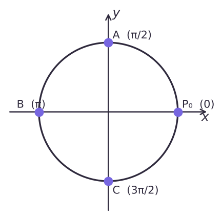

Теория
С этого урока начинается тригонометрия. Не пугайся: всё, что понадобится, — окружность, координаты точки и немного терпения. Сначала научимся измерять углы по-новому — не в градусах, а в радианах.
Что такое радиан
Градус — это 1/360 часть полного оборота; число 360 когда-то выбрали просто по договорённости. Радиан устроен естественнее: он связывает угол с длиной дуги.
Углом в один радиан называют центральный угол окружности, опирающийся на дугу, длина которой равна радиусу окружности.

Важно: радианная мера не зависит от радиуса. Возьмёшь окружность побольше — и дуга, и радиус увеличатся в одно и то же число раз, а угол останется прежним.
Если центральный угол опирается на дугу длиной αR (то есть дуга в α раз длиннее радиуса), его радианная мера равна α рад. Длина полуокружности равна πR, значит, развёрнутый угол равен π рад. В градусах это 180°. Отсюда главное равенство урока:
π рад = 180°. Поэтому 1° = π/180 рад, 1 рад = (180/π)° ≈ 57°.
Как переводить: градусы → радианы — умножаем на π/180; радианы → градусы — подставляем вместо π число 180° (или умножаем на 180/π). Например, 15° = 15 · π/180 = π/12; 3π/4 = 3 · 180°/4 = 135°. Слово «рад» обычно не пишут: «угол π/3» означает π/3 радиана.
| Градусы | 0° | 30° | 45° | 60° | 90° | 120° | 135° | 150° | 180° | 270° | 360° |
|---|---|---|---|---|---|---|---|---|---|---|---|
| Радианы | 0 | π/6 | π/4 | π/3 | π/2 | 2π/3 | 3π/4 | 5π/6 | π | 3π/2 | 2π |
π в радианной мере — это 180°, но само число π ≈ 3,14. Угол в 3 радиана — это не 3°, а около 172°. Не путай «угол π» и «угол 3»: угол 3 рад чуть меньше π, угол 1 рад ≈ 57°.
Длина дуги и площадь сектора
Угол в 1 рад опирается на дугу длиной R, значит, угол в α рад — на дугу в α раз длиннее:
Длина дуги: l = αR. Площадь сектора: S = αR²/2 (докажешь в упражнении 17.19). Здесь α — в радианах.
Радиус окружности 6 см, центральный угол 60°. Найди длину дуги и площадь сектора.
Переведём угол: 60° = π/3. Тогда l = π/3 · 6 = 2π см ≈ 6,28 см; S = (π/3) · 36 / 2 = 6π см².
Проверка «по-старому»: дуга в 60° — это 1/6 окружности, длина окружности 12π, а 12π/6 = 2π. Совпало.
В формулы l = αR и S = αR²/2 угол подставляют только в радианах. Подставив 60 вместо π/3, получишь дугу длиной 360 см вместо 2π.
Единичная окружность и поворот точки
Окружность радиуса 1 с центром в начале координат называют единичной окружностью. На ней отмечена точка P₀(1; 0) — с неё всё начинается.
Представь, что точка выходит из P₀(1; 0) и движется по окружности. Если она двигалась против часовой стрелки и прошла угол 120°, говорят, что точка P получена поворотом точки P₀ на угол 2π/3 и пишут P = R2π/3(P₀). Если по часовой стрелке — угол поворота считают отрицательным: P = R−2π/3(P₀).


Полный оборот — это угол 2π (360°), полтора оборота — 3π (540°). Угол поворота может быть любым действительным числом: и больше 2π, и отрицательным.

Углу поворота соответствует ровно одна точка окружности. А вот наоборот — нет: в одну и ту же точку можно прийти, сделав ещё несколько полных оборотов в любую сторону. Точке, полученной поворотом на π/4, соответствуют углы π/4, π/4 + 2π, π/4 − 2π, π/4 + 4π, … Коротко: π/4 + 2πk, k ∈ Z.

Оси делят окружность на четыре четверти (I, II, III, IV — против часовой стрелки, начиная с правой верхней). Чтобы понять, где окажется точка, «отбрось» лишние полные обороты (прибавь или вычти 360° или 2π несколько раз) и посмотри, куда попал остаток.
Разбор примеров
а) Переведи в радианы 40° и 210°. б) Переведи в градусы π/9 и 5π/3.
а) 40° = 40π/180 = 2π/9; 210° = 210π/180 = 7π/6.
б) π/9 = 180°/9 = 20°; 5π/3 = 5 · 180°/3 = 300°.
В какой четверти окажется точка после поворота на а) 400°; б) −470°; в) 9π/4; г) 2 рад?
- а) 400° = 360° + 40°: один лишний оборот, остаётся 40° — I четверть;
- б) −470° = −360° − 110°: остаётся поворот на −110° по часовой стрелке — III четверть;
- в) 9π/4 = 2π + π/4 — I четверть;
- г) 2 рад ≈ 115°: больше π/2 ≈ 1,57, но меньше π ≈ 3,14 — II четверть.
Найди координаты точки единичной окружности, полученной поворотом P₀ на а) 450°; б) −π; в) 7π/2.
а) 450° = 360° + 90° — точка (0; 1). б) Поворот на полоборота по часовой — точка (−1; 0). в) 7π/2 = 2π + 3π/2 — точка (0; −1).
Найди все углы, при повороте на которые P₀ переходит в точку (0; −1). Укажи наименьший положительный и наибольший отрицательный из них.
Точка (0; −1) получается поворотом на 3π/2 или на −π/2. Все углы: −π/2 + 2πk, k ∈ Z. Наименьший положительный — 3π/2, наибольший отрицательный — −π/2.
Задачи урока
Реши в тетради. Ответы разберём на занятии.
Из учебника
- № 17.1, 17.2 — Перевод градусов в радианы и обратно.
- № 17.3 — Длина дуги по радианной мере.
- № 17.6 — Отметить точку на единичной окружности.
- № 17.8 — В какой четверти лежит точка.
- № 17.10 — Координаты точки после поворота.
- № 17.12 — Наименьший положительный и наибольший отрицательный углы.
Тест к уроку
Домашнее задание
№ 17.2, 17.5, 17.7, 17.9, 17.11 из учебника письменно. Нарисовать в тетради единичную окружность и подписать на ней углы 0, π/6, π/4, π/3, π/2, π, 3π/2, 2π.